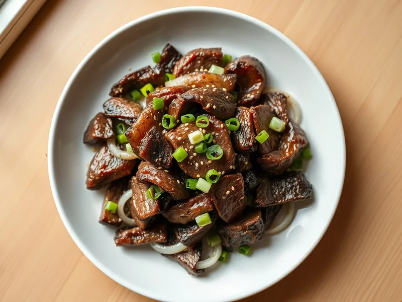

Фото: Иллюстрация ИИ, Cloudflare Workers AI
Пулькоги из говядины
Корейская говядина тонкими ломтиками в сладком соево-чесночном маринаде
30 мин3 порц.465 ккал на порциюБ 34 · Ж 30 · У 14Азиатская кухня
Открыть в приложении: порции, таймеры, список покупок
Продукты на 3 порц.
- Говядина500 г
- Лук репчатый1 шт
- Чеснок3 зуб.
- Соевый соус4 ст. л.
- Сахар1 ст. л.
- Груша по желанию0,5 шт
- Кунжутное масло2 ч. л.
- Растительное масло1 ст. л.
- Кунжут1 ч. л.
- Зелёный лук по желаниюпо вкусу
Как готовить
- Нарежьте говядину поперёк волокон очень тонкими ломтиками 3 мм, лук полукольцами, 7 минут.
- Смешайте соевый соус, сахар, раздавленный чеснок, натёртую грушу и кунжутное масло.
- Залейте мясо с луком маринадом, перемешайте и оставьте на 10 минут.
- Разогрейте сковороду с маслом на сильном огне. Жарьте мясо в 2 приёма по 2-3 минуты, помешивая, пока оно не потемнеет и маринад не выпарится.
- Посыпьте кунжутом и зелёным луком и подавайте сразу.
Совет. Тёртая груша не только даёт вкус, но и размягчает мясо. Если груши нет, замените сахар ложкой мёда.